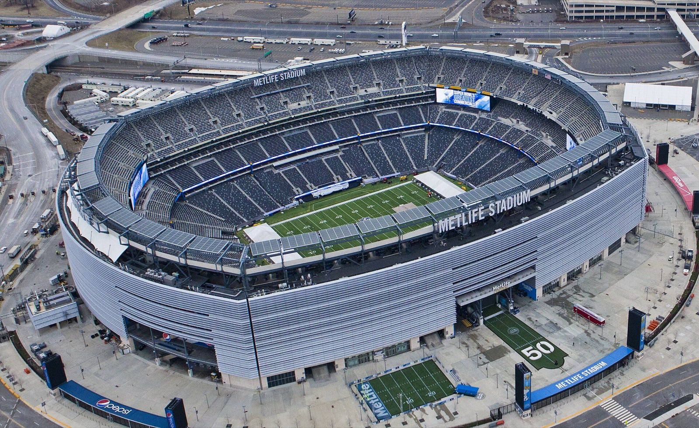

A World Cup
at home, together.
This is for the people I love who care about this team, or just want to be in the room when something this big happens. Same tournament the rest of the country is watching. Just made a little smaller, a little warmer, by who's around the table.
Tell me which games you're going to, or which watch parties you're looking forward to. I'll keep this updated as the tournament moves.
G
SoFi Stadium · photo Troutfarm27 · CC BY-SA 4.0 · Wikimedia Commons
USA 2, Australia 0. Group D, won.
Two games, two wins, and the math is done. We are into the Round of 32, top of the group, with a game to spare. The first home World Cup since 1994 has its first knockout date.
USA 2 · Australia 0 · Lumen Field, Seattle
Group D, Match 2. Friday June 19, Lumen Field, Seattle. Folarin Balogun's low cross from the left was turned into his own net by Australia's Cameron Burgess for an own goal at 11', and Alex Freeman added the second. Controlled, professional, exactly the result we needed. Mike Morrow was in the building, in his own city.
Six points from two games. And with Paraguay beating Türkiye 1-0 the same night, USA has clinched first place in Group D and a spot in the Round of 32. The group finale against Türkiye on June 25 at SoFi is now a free hit. Our knockout match is July 1 at Levi's Stadium in the Bay Area. Full picture on Group D.
Opening night got us started (USA 4, Paraguay 1, June 12, Quinn in the building, me at Gym Bar). Seattle finished the job.
Are you going to any of the matches, or watching one?
Tell me which games and where. Tickets in hand or watch party in mind, both count. I'll group us so we can find each other across cities. The cc on these emails is my AI sidekick Darby, who helps me keep this site updated.
Email me, I'm inDeep dives.
For the friends who want to know more than the score. Open any of these and read what you want, when you want. I'll keep adding to them as questions come in.
Which game are you on?
Each match has its own night. Some of us will be at the venue, some at a bar, some on a couch. All of it counts. Open any match to see what I'm doing, and email me if you want to be part of it.
M01
USA 4, Paraguay 1 · The Opener · Quinn's Match
At the match: Quinn · Watched with G: Gym Bar, West Hollywood
What this night is about
Quinn Hovey is visiting me in LA from June 11 through 14. Quinn is going to the match. I don't have a ticket. My job is to get Quinn to SoFi on time, on the right Metro, with the right energy of a man about to watch his country open a home World Cup. Then I'm holding down the home front at Gym Bar.
At the match
Watching with Gordon (Gym Bar, West Hollywood)
Locked: Gym Bar, 8919 Santa Monica Blvd, West Hollywood. My home bar, every screen on the match, and the crowd will be loud in the right way. I'll be there from the pre-match show on. If you're in LA, come find me. Text me and I'll save you a spot at the rail.
The game · Final: USA 4, Paraguay 1
We got the 3 points and the real performance. A Paraguay own goal off Damián Bobadilla at 7', Balogun's brace at 31' and 45'+5', and Giovanni Reyna at 90'+8'. Julio Enciso scored Paraguay's only goal at 73'. Pulisic was the creator all night. Top of Group D, +3 goal difference. Full strategy and rosters on the Strategy and Group D pages.
Getting Quinn there on time
Quinn's afternoon runs through the American Outlaws pre-game party in Inglewood, then into the stadium early. He has his marching orders: in his seat well before kickoff, phone charged. Opening night security lines will be biblical, so early is the whole plan.
M02
USA 2, Australia 0 · Through to the R32
At the match: Mike Morrow · Watching with G: TBD LA location, opt in
What this afternoon is about
The match is in Seattle. I'm in LA. I'm building the LA watch plan and want company. Friday noon kickoff PT, which means a midday LA crowd, work-day-flexibility energy, and the right LA pub or backyard.
At the match
Watching with Gordon (LA, location TBD)
Candidates: Gym Bar (if Friday the 12th goes as well as I think it will), Tom Bergin's (the institutional LA soccer choice), or a house party if there's enough enthusiasm to host. Vote with your feet.
The game · Final: USA 2, Australia 0
We won it, and won the group. Cameron Burgess turned a Balogun cross into his own net at 11', Alex Freeman added the second, and a 2-0 in Seattle clinched first place in Group D and our spot in the Round of 32. Mike Morrow was there in his own city, 32 years after the 1994 draw we sat at together. Detail on Group D.
M03
USA vs Türkiye · Pete Hines Brought Me
At the match with Gordon: Pete Hines · LA watch party: TBD location, opt in
What this night is about
This one matters to me in a way it's hard to fully say in print. Pete Hines is generously taking me to this match. I have been a soccer fan for fifty years. The sport has carried me through more chapters of my life than almost anything else. Getting to be inside SoFi for a home World Cup game, sitting next to a friend like Pete, is over-the-moon stuff. I am quietly, deeply grateful.
At the match
Watching together (LA, location TBD)
Friends in LA who want to be in the room together, this is the night. If you're in LA and want to opt in, text or email below. Joe will be in LA and may swing by depending on the night.
The game
The group is already won, so this one is pure celebration, a free hit at a home World Cup. Türkiye came in needing points and lost their first two (Paraguay beat them 1-0 on June 19), so they are already out. Arda Güler at 21 is still worth the price of admission, and Pochettino will likely rotate and look at the depth with the knockouts in view. No pressure, all joy, sitting next to Pete at SoFi. Detail on Group D.
R32
Round of 32 · Wiscago Weekend · Chicago Pride + USA R32 + Norway R32
Watching with G: Eric & Crystal + James + Henry + Oscar
What this whole stretch is about
The Wiscago weekend overlaps three soccer-relevant days in a row.
Sunday June 28: Chicago Pride Parade
Chicago Pride Parade with the Francksens, 11am start, Broadway and Montrose. Theme this year is "Free to Be Proud." Two-mile route ending at Diversey Parkway and Cannon Drive. Afterwards, the drive back to Stoughton begins. Norway plays its Round of 32 match somewhere in the Jun 28 to Jul 3 window (exact date depends on Group I final standings). If Norway's match is early afternoon, we watch in Chicago. If it's evening, we'll be listening on the car ride to Stoughton with the game on screens and speakers.
Wednesday July 1: USA Round of 32
USA's R32 match is Match 81 at Levi's Stadium (San Francisco Bay Area), Wednesday July 1, 8pm ET / 7pm CT / 5pm PT. By kickoff we'll all be settled in Stoughton at the Francksen home. Game on the main screen. Kids on the floor or table. Beverages in hand.
Watching with Gordon (Wisconsin, Francksen home)
The USA opponent
USA as Group D winner draws the best 3rd-place team from Group B, E, F, I, or J. Five most likely: Switzerland, Sweden, Norway, Ivory Coast, or Austria. If Norway finishes 3rd, the bracket math could pair Norway against USA in R32 (one of the bracket's possible plot twists). Full opponent profiles on Round of 32.
If you want to watch together remotely
I'll be on a group thread during both matches. Opt in and I'll add you. We can text-watch together across timezones.
R16
Round of 16 · Francksen Family BBQ + USA's R16 two days later
Watching with G: Francksen family + James + Henry + Oscar
Saturday July 4: The Francksen Family BBQ
This is one of the days I am most ecstatic about. Independence Day at the Francksen home, the historic Dragon House, now featuring the Dragon table. There's a Round of 16 match on the screens July 4 (Match 90 in Houston; the Azteca's R16, Match 92, is the next day, July 5) but USA's R16 is Monday July 6.
The atmosphere I am imagining:
- Eric on the grill. Eric loves making a bespoke BBQ menu. I am not going to spoil it. It will be a delightful surprise and the vibes will be immaculate.
- Soccer in the background on the main TV, other R16 matches playing while the day unfolds.
- Minecraft in the foreground with James, Henry, and Oscar. Probably running a Realms server. Probably building a stadium.
- Firefly on a side TV if anyone wants the Mal-and-Zoe energy in the room.
- Ahsoka from Star Wars on a screen.
- Any game involving dragons, it IS the Dragon House. Possibly D&D at the Dragon table. Possibly something from the Wizards of the Coast catalog Eric works with.
Monday July 6: USA's R16 at Lumen Field
USA's actual R16 match is Match 94 on Monday July 6 at Lumen Field, Seattle. Opponent most likely Belgium (Group G winner), or a 3rd-place team if Belgium loses their R32. I'll be back in LA by then or still on the road. Watch plan TBD depending on travel. Full breakdown on Round of 16.
Plan
If you're in the Wisconsin or Chicago orbit, swing by the Francksen BBQ on Saturday. If you're remote, I'll be on the group thread. The whole day is one of the soft-warm chapters of this World Cup for me.
QF
Quarterfinal · If we get here
Crew TBD · Opt in
The frame
If USA gets here, it surpasses the 1994 home-soil run (R16) and ties 2002 for the deepest modern-era run. And it's at SoFi. Everyone who said they might be in will be locked in by now. This is the start of where it becomes everyone's tournament.
SF
Semifinal · No one alive in this country has seen this
Crew TBD · Opt in
The frame
The 1930 semifinal was a different tournament. USMNT has never reached the semis of the modern World Cup. If we get here, the country will be paying attention. Make the plan now for where you'll watch this one even if you don't have a ticket. Bars will be at fire-code.
FINAL
2026 FIFA World Cup Final · Foster's Birthday Weekend · NYC
Watching with G: Foster Birch · Trip with G4C festival · NYC friends opt in

What this trip is about
Three things converging in one NYC week.
1. Foster Birch's birthday weekend. Foster's birthday is Saturday July 18. The Final is Sunday July 19. The trip is in part to be with Foster on his birthday and watch the Final together.
2. The Final itself. Watch location TBD. NYC has every kind of room you could want.
3. Games for Change Festival. Tuesday July 21 and Wednesday July 22 at The Glasshouse NYC. I'm there for festival workshop programming. Full NYC window is July 16 to 22.
Watching with Gordon (NYC, location TBD)
If you're in NYC and want to watch with us
Opt in. We'll lock the spot by Wednesday Jul 15 and text everyone the address. NYC friends, this is your invite to be part of Foster's birthday weekend and the Final at the same time.
If we're not in the Final
The trip still happens. Foster's birthday is still on. We'll watch whoever's in the Final from the same room.
The signal.
Three rules so we don't get lost across cities and time zones.
1. Timestamped texts and Find My
The most reliable way to find me is to text me with a timestamp ("I'm at section 130, 8:42pm") and turn on Find My Friends if we're both on iPhone. Pulling out the phone twice is faster than scanning a crowd.
2. The group threads
Once you opt in, I'll add you to the right thread for your matches and watch parties. One thread per game so it stays clean.
3. The people who love me through this
Joe and Brennan are not soccer people. They are showing up for me, not the game. If you see Joe or Brennan in any room with me during the tournament, they are there because they love me. That is the whole sentence. Be warm with them. Don't quiz them on the bracket.
4. Share this with friends
This site is meant to be shared. If you have a friend who'd want to opt in, send them the link. They can email me with which games they're going to or which watch parties they're putting together. The whole point is to make this tournament feel small and warm at scale.
One more time, with feeling.
Hit me at any of: text 818-472-7283 · email below · or pass this site along. Tell me which games. Tell me your watch party plan. The earlier you tell me, the bigger the crew on the night.
Send me your matches